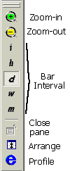
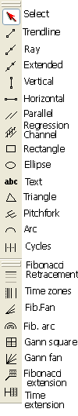
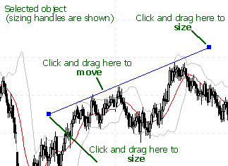

Introduction
AmiBroker charting engine allows object-oriented manipulation of all drawings. Now you can simply move, resize, cut, copy, paste, and delete all drawing objects with ease. This chapter will guide you through most important aspects of using charting tools.
Let's now take a look at the user interface:
As you can see, in the center we have a chart area in which a price chart with a moving average and Bollinger bands is plotted (you can control the appearance of built-in charts from the Tools->Preferences window).
In the bottom of the chart you can see a date axis (marked with red color), and below it, a scroll bar and chart sheets tab control. The scroll bar can be used to display past quotes, while the sheet tab allows you to view different chart pages/sheets (click here to learn more about chart sheets).
To the right, you can see the Y-axis area (marked with blue color) that shows the Y-scale and value labels. Value labels are color fields that display precisely the "last value" of plots. "Last value" is the value of the indicator (or price) for the last currently displayed (rightmost) bar. The Y-axis area is also used to move/size charts vertically.
Next to the right is a drawing objects toolbar that allows you to choose from available drawing types (note that only the most popular tools are shown here; a complete set is available from the Insert menu). A special tool called "Select" (red arrow) is used to select/move/resize already drawn objects and to select quotes from the chart.
In the upper part, you can see the formatting toolbar that allows you to quickly modify the color, style (thick/dotted), and mode (snap to price) of the currently selected drawing object.
In the picture, you can also see a trend line drawn with sizing handles marked. These handles are used to drag/size the object, as will be explained below.
Basic operations
Scrolling
To scroll the chart forward/backward, just drag the scroll bar thumb or use < and > arrows on the left and right sides of the scroll bar. Note that using the < > scroll bar arrows allows you to move the chart by one bar. To scroll the chart, you can also use the mouse equipped with a wheel. Just roll the wheel up and down to scroll backward and forward.
Zooming
To zoom the chart (increase or decrease the number of data points (bars)
displayed), you can use either the View->Zoom menu, the zoom toolbar, or the mouse
wheel.
You can also zoom by dragging the left or right edge of the scroll bar.
The following options are available: zoom-in - decreases the number
of data points displayed; zoom-out - increases the number of data points displayed;
zoom-all - displays all available bars; zoom-normal resets the number of bars
displayed
to the value defined in Tools->Preferences->Charting. Zoom-in
and zoom-out options are accessible directly from the View toolbar (see the picture
below). To zoom using the mouse wheel, just press and hold down the CTRL key and roll
the wheel. You can also zoom to any 'from-to' range selected on the chart (see
'Marking Range' later in this tutorial).
Shrinking, expanding, and moving Y-axis scale
To move the Y-axis scale, hover the mouse over the Y-axis area (marked with blue color in the picture above), and you will see that the cursor changes to an up/down arrow. Now, you click and drag the Y-axis up/down and release the button when the axis is in the correct position.
To shrink/expand the Y-axis scale: press and hold down the SHIFT key and click in the Y-axis area; now, shrink/expand the Y-axis scale by moving your mouse up and down. Release the button to finish.
To reset the Y-axis scale and position, simply double-click in the Y-axis area.
Changing bar interval (periodicity)
You can easily switch between daily/weekly/monthly and intraday intervals by choosing it from the View menu and pressing the toolbar button (see below).
 |
The toolbar uses the following notation for intervals: i - intraday, h - hourly, d - daily, w - weekly, m - monthly. The i represents the "base" intraday interval as defined in File->Database Settings. Remaining intraday intervals are available from the View->Intraday menu. The interval setting affects the active window only, so each window can have a different interval. Please note that intraday intervals are disabled if your database is in end-of-day mode. Intraday modes are available only for databases that have "Base time interval" in File->Database Settings set to anything less than end-of-day. If you, for example, set "Base time interval" in File->Database Settings to 5-minute, all chart periodicities from 5-minute up will be enabled. |
The following intervals are built-in:
In addition, you can define 5 custom n-minute bar intervals and 5 custom n-tick intervals in Tools->Preferences->Intraday. Custom intervals are available from the View->Intraday menu only.
Selecting a quote
You can very easily see past quotes and indicator values by using the "select" mode. To select a past quote, first, switch to "Select" mode (red arrow in the toolbar), then click in the chart area (but not on the drawing object). A vertical line will show up marking the quote under the cursor. The chart title will display this bar's quote. Indicator panes will show the indicator value for the given bar. Once a quote is selected, you can move to the previous/next quote using the keyboard left and right arrow keys (<- and ->).
To switch off quote selection, either click again on the line, or click in the date axis area (marked with red in the picture above), or click in the right margin (blank quotes) area. When selection is off, the chart title displays the values for the last visible bar.
Marking range
To show a range marker, just double-click the chart at the beginning of the range and double-click again at the end of the range. You can also use the F12 key in conjunction with "select" mode (described above). Just select a quote and press F12 for the beginning, and SHIFT+F12 for the range end. You can switch off the range marker by pressing the CTRL+F12 key or double-clicking in the same place twice.
Range markers can be used to select a zoom-in range (View->Zoom->Range) and to perform calculations on selected values via BeginValue and EndValue AFL functions.
Adding / closing chart panes
Each window can consist of several panes displaying various charts/indicators. To display a new indicator in a separate chart pane, just find the indicator in the Charts list (use Window -> Charts menu) and double-click on the indicator name. For more information, see Drag&drop charting tutorial.
To close any chart pane: click on the pane, then use either View->Pane->Close from the main menu or click on the pane with the right mouse button and choose Close from the context menu.
Linking and locking charts
Multiple chart windows (that were open using File->New->Default Chart or File->New->Blank Chart) can be interval-linked, symbol-linked using appropriate small "S" and "I" buttons that appear on the left side of the scroll bar. When you click on a button, the menu showing colors will pop up. Select a color; then, charts and symbols linked using that same color will be linked using the symbol and/or interval across 2 or more charts. Linking means that a change of the symbol and/or interval in one of the linked windows automatically changes the symbol and/or interval in all linked windows using the same link color.
You can also prevent a symbol from being changed for a given chart. It can be done by turning on the little padlock button ("Symbol Lock") on the right side of the scroll bar. When a chart is symbol-locked, it will not allow the selected symbol to be changed unless the lock is released (by pressing the padlock button again).
Using drawing tools
AmiBroker features an extensive set of drawing tools:
 |
The following tools are available:
They are available from the Insert menu and Draw toolbar. Each drawing object can be moved, resized, copied, deleted, and modified after it is drawn.
|
To draw an object on the chart, switch on the appropriate tool button (see the picture below) and start drawing on the chart by pointing the mouse and pressing the left mouse button where you want to start the drawing. Then, move the mouse. A study tracking line will appear. Release the left mouse button when you want to finish drawing. You can also cancel study drawing by pressing the ESC (escape) key.
If you hover your mouse over the object, you will see that the cursor shape changes in the proximity of the object. This means that.
If the cursor is near either end of the object, it will change its shape to a sizing
pointer:
If the cursor is near the remaining parts of the object, it will change its shape
to a moving pointer:
Once an object is drawn, it can be selected, moved, resized, deleted, or copied.
 |
To select the object, simply move the mouse over the object so the "moving pointer" appears and click once - the object will be marked, and the sizing handles (see the first picture) will appear. To de-select, click in the blank chart space. To size the object, click on the sizing handle and drag to the desired location as shown in the picture. To move the object, click on any other part of the object and move it to the desired location. |
To delete an object - select it first and press the DEL (DELETE) key on the keyboard, or use the Edit->Delete menu, or use the Delete toolbar button.
To copy the object to the clipboard - select it first and press Ctrl+C or use the Edit->Copy menu or use the Copy toolbar button.
To cut the object - select it first and press Ctrl+X or use the Edit->Cut menu or use the Cut toolbar button.
To paste the object from the clipboard, press Ctrl+V or use Edit->Paste, or use the Paste toolbar button. A pasted object will be drawn in the exact same location as the copied one and will be selected automatically so you can move it to a new location.
To apply color or style to the object, select it and use the Format menu or Format toolbar buttons to change color, thick, dotted, and snap to price styles. Note that you can also select the color and style of the object before drawing a new object: simply deselect the previous object (if any), change color/style selections, and draw a new object.
To modify properties of the object, either double-click it or use the Edit->Properties menu or the Alt+ENTER key.
To delete all objects, use the Edit->Delete All menu.
Further information
To learn more about drawing tools, please read the Drawing Tools Reference chapter.